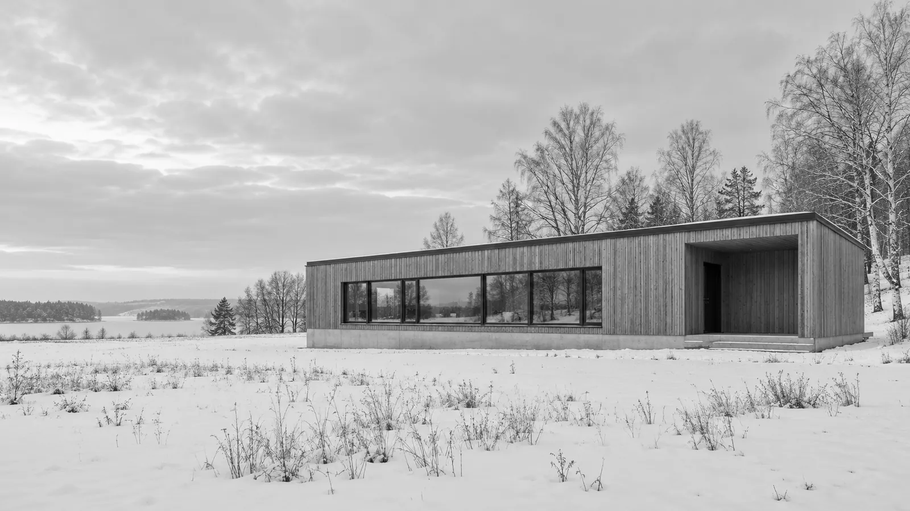
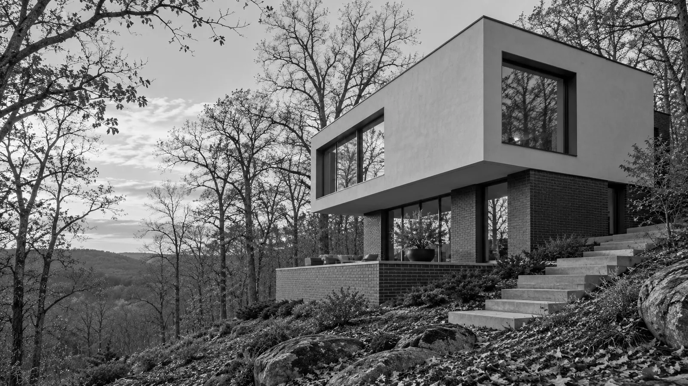

SELECTED BUILDINGS / READING INDEX
Two houses.
Two horizons.
A small atlas of two invented houses and their settings. Indexed by project, with images, brief observations and source records.
Project index
| No. | Building | Location / completed |
|---|---|---|
| 001 | Hallvarn House ↘ | Meadow site, northern lowlands / 1964 |
| 002 | Corveline House ↘ | Wooded slope, river valley / 1971 |
001 / MEADOW SITE
Hallvarn
House.
Maren Ostvald / 1964
A long timber volume sits on a pale base in the snow. The window band carries the line of the building along the meadow.
Open the monograph and plan →

002 / WOODED SLOPE
Corveline
House.
Kerrowe Studio / 1971
Two stacked volumes follow the slope instead of the horizon. The white upper floor reaches over the terrace, while the stair establishes an approach along the hill.
Read the source record ↗ON THE READING OF A PLACE
Image, drawing,
then a note.
Keep the photograph large enough to understand its setting. Use a drawing to ask a specific spatial question. Let the caption explain what each record can actually tell us.
Return to the project index ↑Atlas sources
Both images: original AI-generated illustrations of invented houses, converted to monochrome WebP. Houses, architects, places and dates are invented for this reference.
Read both image records
Local rights record. Neither image shows a real building.